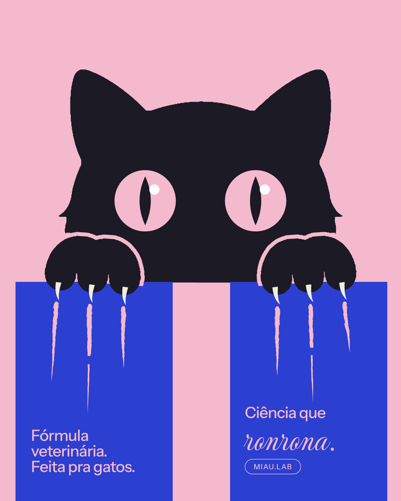
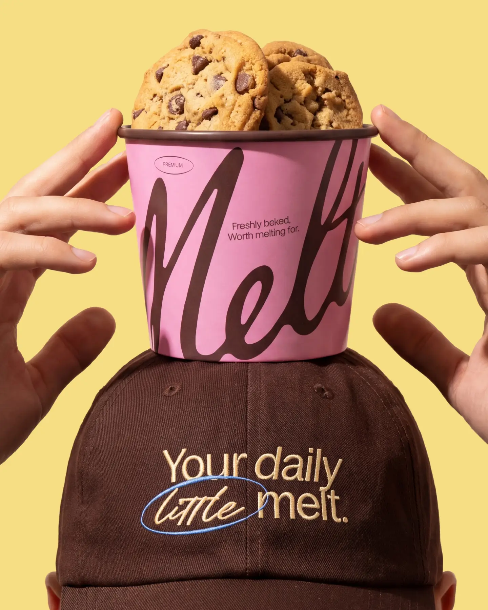
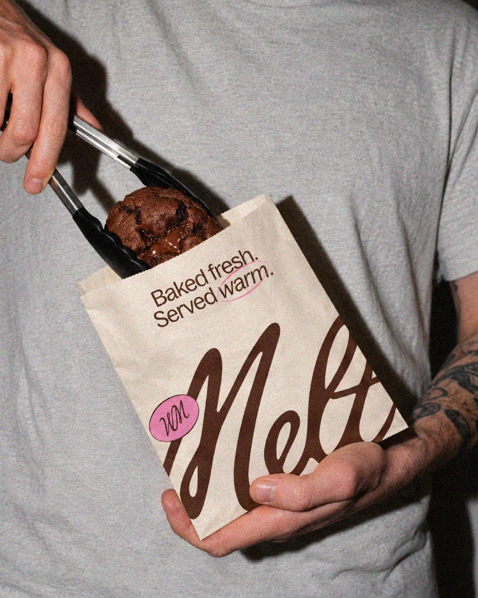
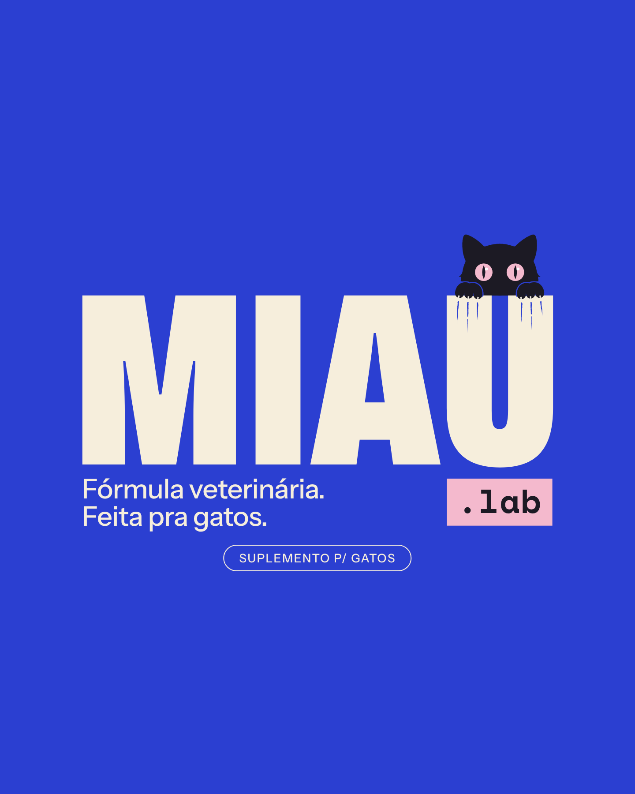
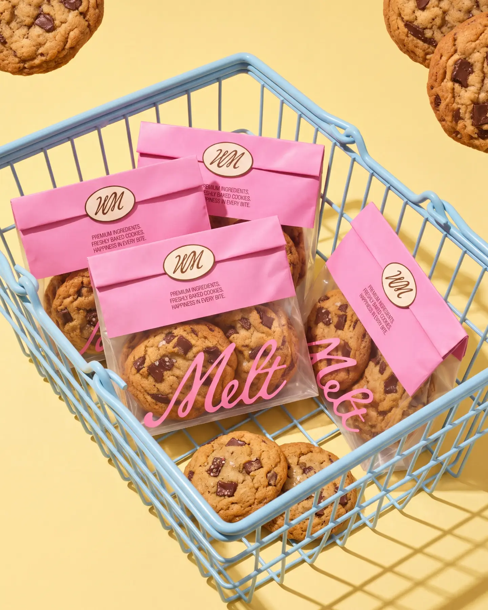
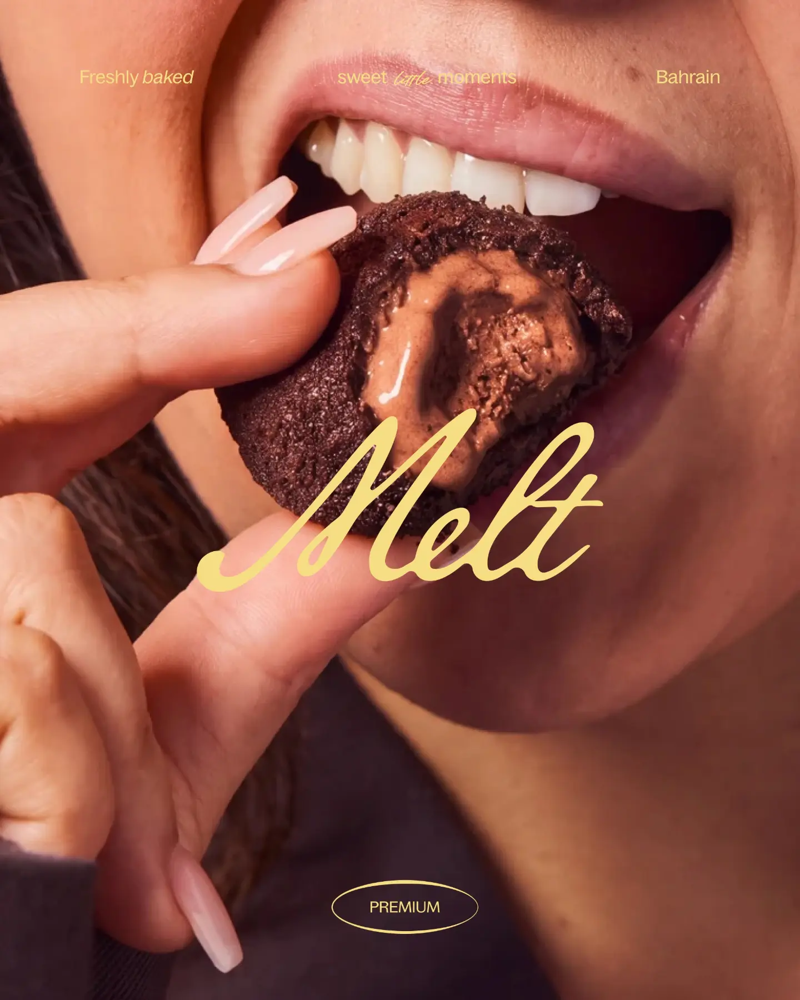
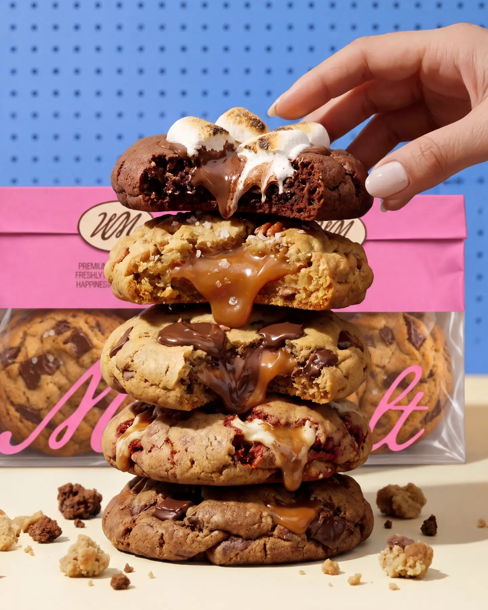

gato preto de verdade espiando por cima de um pote MIAU.LAB cobalto, mãos segurando; fundo manteiga
saquinho kraft com o MIAU gigante abraçando a embalagem; pinça de laboratório tirando um petisco; "Ciência que ronrona." impresso

UMA FOTO EM DUAS LÂMINAS · à esquerda, cesta de arame com as caixinhas rosa MIAU.LAB; atravessando a divisa, um gato preto de verdade com as patas na borda da cesta, espiando — o logo na vida real de novo
close do gato lambendo o petisco na ponta do dedo; por cima, o MIAU vazado, a linha de microtexto e a pílula
pilha de caixinhas e potes, com uma patinha preta entrando pelo canto para pegar uma